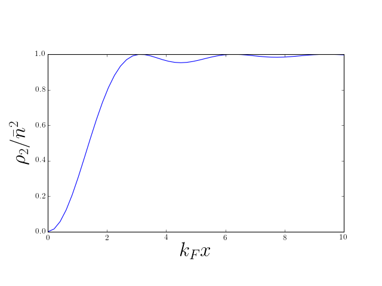
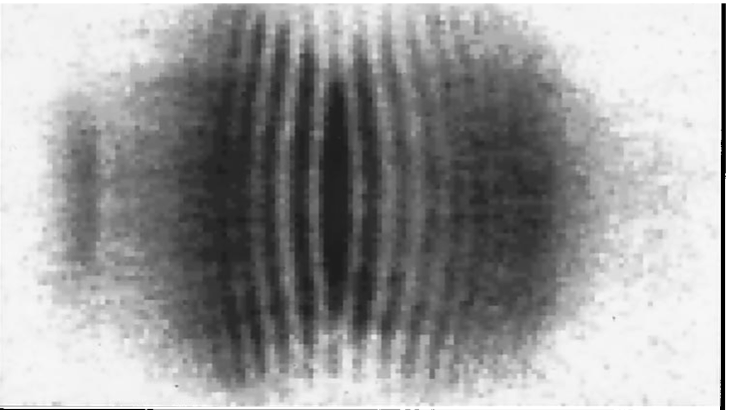

B is for Bunching
More Second Quantization
- Lecture 1: density correlations in ground state of 1D Fermi gas
\rho_2(x,y) = n^2\left[1 - \left(\frac{\sin\left[k_\text{F}(x-y)\right]}{k_\text{F}(x-y)}\right)^2\right]
How to find this using second quantization?
What can these correlations tell us about interactions?
\rho_2 from Second Quantization
From Lecture 1: pair distribution function \rho_2(x_1,x_2) = N(N-1) \int dx_3\ldots dx_N \left|\Psi(x_1,x_2,\ldots,x_N)\right|^2 measures likelihood of finding particles at x_1 and x_2
For 1D Fermi gas ground state we found (Slater determinant, etc.) \rho_2(x,y) = n^2\left[1 - \left(\frac{\sin\left[k_\text{F}(x-y)\right]}{k_\text{F}(x-y)}\right)^2\right]
Let’s calculate using second quantization!
\rho_2(x,y) = N(N-1) \int dx_3\ldots dx_N \left|\Psi(x,y,\ldots,x_N)\right|^2
- Recall from Lecture 5
\begin{align*} \lvert{\Psi}\rangle&\longleftrightarrow \Psi(x_1,\ldots, x_N)\nonumber\\ \psi(X)\lvert{\Psi}\rangle&\longleftrightarrow \sqrt{N}\Psi(X,x_1,\ldots, x_{N-1})\\ \end{align*}
- Second quantized form
\rho_2(x,y) =\braket{\Psi|\psi^\dagger(x)\psi^\dagger(y)\psi^{\vphantom{\dagger}}(y)\psi^{\vphantom{\dagger}}(x)|\Psi}
\rho_2(x,y) =\braket{\Psi|\psi^\dagger(x)\psi^\dagger(y)\psi^{\vphantom{\dagger}}(y)\psi^{\vphantom{\dagger}}(x)|\Psi}
Operators in which all annihilation operators stand to the right of all creation operators are said to be normal ordered
Two particle terms in the Hamiltonian are normal ordered to prevent particle interacting with itself!
\rho_2(x,y) =\braket{\Psi|\psi^\dagger(x)\psi^\dagger(y)\psi^{\vphantom{\dagger}}(y)\psi^{\vphantom{\dagger}}(x)|\Psi}
- Insert expansion
\begin{align*} \psi^{\vphantom{\dagger}}(x)=\sum_{\beta} \varphi^{}_{\beta}(x)a^{\vphantom{\dagger}}_{\beta},\\ \psi^\dagger(x)=\sum_{\beta} \varphi^*_{\beta}(x)a^\dagger_{\beta}. \end{align*}
- This gives
\rho_2(x,y)=\sum_{\alpha, \beta, \gamma, \delta}\varphi^{*}_{\alpha}(x)\varphi^{*}_{\beta}(y)\varphi^{}_{\gamma}(y)\varphi^{}_{\delta}(x)\braket{\Psi|a^\dagger_{\alpha}a^\dagger_{\beta}a^{\vphantom{\dagger}}_{\gamma}a^{\vphantom{\dagger}}_{\delta}|\Psi}.
\braket{\Psi|a^\dagger_{\alpha}a^\dagger_{\beta}a^{\vphantom{\dagger}}_{\gamma}a^{\vphantom{\dagger}}_{\delta}|\Psi}
- When \lvert{\Psi}\rangle=\lvert{\mathbf{N}}\rangle (product state using a^\dagger_\alpha) have two possibilities \begin{align*} &\alpha =\delta,\, \beta=\gamma, \text{ or }\\ &\alpha=\gamma,\, \beta=\delta, \end{align*} which give rise to two groups of terms \begin{align*} \braket{\mathbf{N}|a^\dagger_{\alpha}a^\dagger_{\gamma}a^{\vphantom{\dagger}}_{\gamma}a^{\vphantom{\dagger}}_{\alpha}|\mathbf{N}}&=N_{\alpha}N_{\gamma}\nonumber\\ \braket{\mathbf{N}|a^\dagger_{\alpha}a^\dagger_{\gamma}a^{\vphantom{\dagger}}_{\alpha}a^{\vphantom{\dagger}}_{\gamma}|\mathbf{N}}&=\pm N_{\alpha}N_{\gamma}\qquad\text{if }\alpha\neq\gamma, \end{align*} \pm corresponding to bosons and fermions
\begin{align*} \rho_2(x,y)&=\sum_{\alpha, \beta, \gamma, \delta}\varphi^{*}_{\alpha}(x)\varphi^{*}_{\beta}(y)\varphi^{}_{\gamma}(y)\varphi^{}_{\delta}(x)\braket{\Psi|a^\dagger_{\alpha}a^\dagger_{\beta}a^{\vphantom{\dagger}}_{\gamma}a^{\vphantom{\dagger}}_{\delta}|\Psi}\\ &=\sum_{\alpha, \beta}N_\alpha N_\beta\left[\lvert{\varphi_{\alpha}(x)}\rvert^2\lvert{\varphi_{\beta}(y)}\rvert^2 \pm \varphi^*_\alpha(x)\varphi^{}_\alpha(y)\varphi^*_\beta(y)\varphi^{}_\beta(x) \right]. \end{align*}
Notice \alpha=\beta=\gamma=\delta has a factor 2N_\alpha^2
Should have N_\alpha(N_\alpha-1) for bosons; zero for fermions
Involves sum over a single index, general case is sum over two indices. Often not important in thermodynamic limit.
For plane wave states we have the usual prescription \sum_\alpha(\cdots) \longrightarrow L\int (\cdots)\frac{dk}{2\pi} assuming integrand smooth
Error from “wrong” terms has extra L^{-1}
Careful with Bose condensates, where one state has finite fraction of particles
\begin{align*} \rho_2(x,y)&=\sum_{\alpha, \beta, \gamma, \delta}\varphi^{*}_{\alpha}(x)\varphi^{*}_{\beta}(y)\varphi^{}_{\gamma}(y)\varphi^{}_{\delta}(x)\braket{\Psi|a^\dagger_{\alpha}a^\dagger_{\beta}a^{\vphantom{\dagger}}_{\gamma}a^{\vphantom{\dagger}}_{\delta}|\Psi}\\ &=\sum_{\alpha, \beta}N_\alpha N_\beta\left[\lvert{\varphi_{\alpha}(x)}\rvert^2\lvert{\varphi_{\beta}(y)}\rvert^2 \pm \varphi^*_\alpha(x)\varphi^{}_\alpha(y)\varphi^*_\beta(y)\varphi^{}_\beta(x) \right]. \end{align*}
- Can express using density \rho_1(x) and density matrix as g(x,y) \rho_2(x,y) = \rho_1(x)\rho_1(y) \pm g(x,y)g(y,x) for ground state of the Fermi gas, reproduces \rho_2(x,y) = n^2\left[1 - \left(\frac{\sin\left[k_\text{F}(x-y)\right]}{k_\text{F}(x-y)}\right)^2\right]

‘Hole’ set by \lambda_\text{F} or mean particle separation
Decaying Friedel oscillations, indicating liquid-like correlations
For bosons \rho_2(x,y) = \rho_1(x)\rho_1(y) + g(x,y)g(y,x),
If g(x,y)\to 0 as \lvert{x-y}\rvert\to\infty \rho_2(x,x) is twice the value at \lvert{x-y}\rvert\to\infty.
\rho_2(x,y) = \rho_1(x)\rho_1(y) \pm g(x,y)g(y,x),
For different occupations can recalculate \rho_1(x) and g(x,y)
Applies to product states only
Hanbury Brown and Twiss Effect
\rho_2(x,y) can show interference, as can \rho_1(x) (‘intensity’)
Classic BEC experiment of Andrews et al.
Earlier demonstrations of HBT in astro, see Wikipedia for more
N noninteracting bosons occupying ground state \varphi_{0}(\mathbf{r}) of some potential: a Bose condensate
N-body wavefunction is \Psi(\mathbf{r}_1,\mathbf{r}_2,\ldots,\mathbf{r}_N)=\prod_i^N \varphi_0(\mathbf{r}_i) \lvert{\Psi}\rangle=\frac{1}{\sqrt{N!}}\left(a^\dagger_0\right)^N\lvert{\text{VAC}}\rangle where a^\dagger_0 creates particle in state \varphi_0(\mathbf{r})
Experiment of Andrews et al.
Two identical BECs side by side
Switch off potentials: particles fly out
After some time wavefunctions overlap. What do we see?
A simpler situation..
One BEC, each atom in superposition of \varphi_L(\mathbf{r}) and \varphi_R(\mathbf{r}) \lvert{\bar N_L,\bar N_R}\rangle_\theta\equiv\frac{1}{\sqrt{N!}}\left[\sqrt{\frac{\bar N_L}{N}}e^{-i\theta/2} a^\dagger_L+\sqrt{\frac{\bar N_R}{N}}e^{i\theta/2}a^\dagger_R\right]^N\lvert{\text{VAC}}\rangle \bar N_{L,R} are average particle number (N=\bar N_L+\bar N_R)
System evolves for time t. Recall that field operator obeys i\frac{\partial \psi^{\vphantom{\dagger}}(\mathbf{r},t)}{\partial t} = -\frac{1}{2m}\nabla^2\psi^{\vphantom{\dagger}}(\mathbf{r},t) (no potential)
- Write the field operator \psi^{\vphantom{\dagger}}(\mathbf{r},t)=\varphi_L(\mathbf{r},t)a^{\vphantom{\dagger}}_L+\varphi_R(\mathbf{r},t)a^{\vphantom{\dagger}}_R+\cdots, where wavefunctions \varphi_{L/R}(\mathbf{r},t) obey free particle Schrödinger
\begin{align*} \rho_1(\mathbf{r},t)=\bar N_L|\varphi_L(\mathbf{r},t)|^2+\bar N_R|\varphi_R(\mathbf{r},t)|^2+\overbrace{2\sqrt{\bar N_L \bar N_R}\mathrm{Re}\,e^{i\theta}\,\varphi^*_L(\mathbf{r},t)\varphi_R(\mathbf{r},t)}^{\equiv\rho_{\mathrm{int}( \mathbf{r},t)}} \end{align*}
If clouds begin overlap, last term can give interference fringes
Relative phase has real physical effect.
Check
Consider a Gaussian wavefunction of width R_0 at time t=0. Show (by substitution into the Schrödinger equation is fine) that this function evolves as
\varphi(\mathbf{r},t)=\left(\frac{1}{2\pi \sigma_0^2}\right)^{1/4}\frac{1}{\sqrt{1 + it / (2m\sigma_0^2)}}\exp\left[-\frac{\mathbf{r}^2}{4\sigma_0^2\left(1 + it/(2m\sigma_0^2) \right)}\right]
After time t the width of this wavepacket is
\sigma_t^2=\sigma_0^2+\frac{t^2}{4m^2\sigma_0^2}
Back to Andrews…
Do same thing with two condensates of fixed particle number
System is in product state (often Fock state in this context) \lvert{N_L,N_R}\rangle\equiv\frac{1}{\sqrt{N_L! N_R!}}\left(a^\dagger_L\right)^{N_L}\left(a^\dagger_R\right)^{N_R}\lvert{\text{VAC}}\rangle
Compute density as before \rho_1(\mathbf{r},t)=N_L|\varphi_L(\mathbf{r},t)|^2+N_R|\varphi_R(\mathbf{r},t)|^2 which differs from the previous result by the absence of the interference term.
But a single image is not an expectation value!
Correlation function can tell us about fluctuations between images
Our result for \rho_2 gives
\begin{align*} \rho_2(\mathbf{r},\mathbf{r}')&=\rho_1(\mathbf{r})\rho_1(\mathbf{r}') +N_LN_{R}\varphi_L^*(\mathbf{r})\varphi_R^*(\mathbf{r}')\varphi_L(\mathbf{r}')\varphi_R(\mathbf{r}) \nonumber\\ &\qquad+N_{L}N_R\varphi_R^*(\mathbf{r})\varphi_L^*(\mathbf{r}') \varphi_R(\mathbf{r}')\varphi_L(\mathbf{r}) \end{align*}
- Second and third terms contains interference fringes!
\rho_2 gives probability of finding an atom at \mathbf{r}' if there is one at \mathbf{r}
Conclusion: in each measurement of density, fringes are present but with random phase

- Expectations in Fock state can be obtained using relative phase state, but with subsequent averaging over phase.
Check
Prove this by showing that the density matrix
\rho=\int_0^{2\pi}\frac{d\theta}{2\pi}\lvert{\bar N_L,\bar N_R}\rangle_\theta\langle{\bar N_R,\bar N_L}\rvert_\theta
coincides with that of a mixture of Fock states with binomial distribution of atoms into states \varphi_{L}, \varphi_{r}. At large N this distribution becomes sharply peaked at occupations \bar N_L, \bar N_R.
Hartree–Fock Theory
- Recall from Lecture 5
\hat H_\text{int.} = \sum_{j<k} U(\mathbf{r}_j-\mathbf{r}_k)=\frac{1}{2}\int d\mathbf{r}_1 d\mathbf{r}_2\, U(\mathbf{r}_1-\mathbf{r}_2)\psi^\dagger(\mathbf{r}_1)\psi^\dagger(\mathbf{r}_2)\psi^{\vphantom{\dagger}}(\mathbf{r}_2)\psi^{\vphantom{\dagger}}(\mathbf{r}_1).
- Since
\sum_{j<k} U(\mathbf{r}_j-\mathbf{r}_k) = \frac{1}{2}\int \sum_{j\neq k}\delta(\mathbf{r}_1-\mathbf{r}_j)\delta(\mathbf{r}_2-\mathbf{r}_k)U(\mathbf{r}_1-\mathbf{r}_2) d\mathbf{r}_1 d\mathbf{r}_2,
- Find expectation value of interaction energy in a product state
\begin{align*} \langle \hat V\rangle &= \overbrace{\frac{1}{2}\int d\mathbf{r}\, d\mathbf{r}'\, \rho_1(\mathbf{r}) U(\mathbf{r}-\mathbf{r}')\rho_1(\mathbf{r}')}^{\equiv E_\text{Hartree}} \\ &\qquad\overbrace{\pm \frac{1}{2}\int d\mathbf{r}\, d\mathbf{r}'\, U(\mathbf{r}-\mathbf{r}')g(\mathbf{r},\mathbf{r}')g(\mathbf{r}',\mathbf{r})}^{\equiv E_\text{Fock}} \end{align*}
The two terms are Hartree and Fock (or exchange) contributions
Basis of variational Hartree–Fock method for many body systems: approximate ground state by product state
Hartree–Fock for Electron Gas
What about spin?
Use field operators \psi^{\vphantom{\dagger}}_\sigma(\mathbf{r}), \psi^\dagger_\sigma(\mathbf{r}') satisfying
\begin{gather*} \left\{\psi^{\vphantom{\dagger}}_{\sigma_1}(\mathbf{r}_1),\psi^\dagger_{\sigma_2}(\mathbf{r}_2)\right\}=\delta_{\sigma_1\sigma_2}\delta(\mathbf{r}_1-\mathbf{r}_2)\nonumber\\ \left\{\psi^{\vphantom{\dagger}}_{\sigma_1}(\mathbf{r}_1),\psi^{\vphantom{\dagger}}_{\sigma_2}(\mathbf{r}_2)\right\}=\left\{\psi^\dagger_{\sigma_1}(\mathbf{r}_1),\psi^\dagger_{\sigma_2}(\mathbf{r}_2)\right\}=0 \end{gather*}
- Density matrix is a matrix in spin space as well as real space
g_{\sigma_1\sigma_2}(\mathbf{r}_1,\mathbf{r}_2) = \braket{\Psi|\psi^\dagger_{\sigma_1}(\mathbf{r}_1)\psi^{\vphantom{\dagger}}_{\sigma_2}(\mathbf{r}_2)|\Psi}.
- From g_{\sigma_1\sigma_2}(\mathbf{r}_1,\mathbf{r}_2) we get density and spin density
\mathbf{\rho}(\mathbf{r}) = \operatorname{tr}\left[g(\mathbf{r},\mathbf{r})\right],\quad \mathbf{s}(\mathbf{r}) = \frac{1}{2}\operatorname{tr}\left[\boldsymbol{\sigma}g(\mathbf{r},\mathbf{r})\right]
- Spin-independent interaction
\hat H_\text{int.} = \frac{1}{2}\sum_{\sigma_1,\sigma_2}\int d\mathbf{r}_1 d\mathbf{r}_2\, U(\mathbf{r}_1-\mathbf{r}_2)\psi^\dagger_{\sigma_1}(\mathbf{r}_1)\psi^\dagger_{\sigma_2}(\mathbf{r}_2)\psi^{\vphantom{\dagger}}_{\sigma_2}(\mathbf{r}_2)\psi^{\vphantom{\dagger}}_{\sigma_1}(\mathbf{r}_1)
- Hartree–Fock energy then
\begin{align*} \langle \hat H_\text{int.}\rangle &=\frac{1}{2}\int d\mathbf{r}\, d\mathbf{r}'\, \rho(\mathbf{r}) U(\mathbf{r}-\mathbf{r}')\rho(\mathbf{r}')\\ &- \frac{1}{2}\int d\mathbf{r}\, d\mathbf{r}'\, U(\mathbf{r}-\mathbf{r}')\operatorname{tr}\left[g(\mathbf{r},\mathbf{r}')g(\mathbf{r}',\mathbf{r})\right] \end{align*}
- Fock term can be rewritten using identity \delta_{ab}\delta_{cd} = \frac{1}{2}\left[\boldsymbol{\sigma}_{a c}\cdot \boldsymbol{\sigma}_{d b} + \delta_{ac}\delta_{db}\right], which gives \begin{align*} E_{\text{Fock}} &=-\frac{1}{4} \int d\mathbf{r}\, d\mathbf{r}'\, U(\mathbf{r}-\mathbf{r}')\operatorname{tr}\left[g(\mathbf{r},\mathbf{r}')\right]\operatorname{tr}\left[g(\mathbf{r}',\mathbf{r})\right]\\&-\frac{1}{4}\int d\mathbf{r}\, d\mathbf{r}'\, U(\mathbf{r}-\mathbf{r}')\operatorname{tr}\left[\boldsymbol{\sigma}g(\mathbf{r},\mathbf{r}')\right]\cdot\operatorname{tr}\left[\boldsymbol{\sigma}g(\mathbf{r}',\mathbf{r})\right] \end{align*}
- Suppose U(\mathbf{r})=V_0 \delta(\mathbf{r})
E_{\text{Fock}} =-\frac{V_0}{4} \int d\mathbf{r}\, \rho(\mathbf{r})^2-V_0\int d\mathbf{r}\, \mathbf{s}(\mathbf{r})\cdot\mathbf{s}(\mathbf{r})
- Second term favours ferromagnetism for V_0>0 (c.f. Hund’s rules)
Check
This is most succintly put by the formula \rho_2(\mathbf{r},\mathbf{r}) = \frac{1}{2}\rho(\mathbf{r})^2 - 2\mathbf{s}(\mathbf{r})\cdot\mathbf{s}(\mathbf{r}) So \lvert{\mathbf{s}(\mathbf{r})}\rvert=\rho(\mathbf{r})/2\longrightarrow\rho_2(\mathbf{r},\mathbf{r})=0
Hartree–Fock energy forms the basis of variational method using product states
For a Hamiltonian with translational invariance H = \int d\mathbf{r}\frac{1}{2m}\nabla\psi^\dagger\cdot\nabla\psi^{\vphantom{\dagger}}+ \frac{1}{2}\int d\mathbf{r}d\mathbf{r}' U(\mathbf{r}-\mathbf{r}')\psi^\dagger(\mathbf{r})\psi^\dagger(\mathbf{r}')\psi^{\vphantom{\dagger}}(\mathbf{r}')\psi^{\vphantom{\dagger}}(\mathbf{r}) guaranteed to involve with plane wave single particle states. Only variational parameters are occupancies of states
If translational symmetry is broken, have to allow the states — as well as the occupancies — to vary.
Stoner Criterion for Ferromagnetism
Polarizing spins in a Fermi gas is not without cost (otherwise everything would be ferromagnetic!)
Price to pay is increased kinetic energy!
- Ground state kinetic energy of N (spinless) fermions in three dimensions, obtained from
\begin{align*} N &= \sum_{|\mathbf{k}|<k_\text{F}}1\longrightarrow L^3 \int_{|\mathbf{k}|<k_\text{F}} \frac{d\mathbf{k}}{(2\pi)^3} = \frac{k_\text{F}^3L^3}{6\pi^2} \\ E_\text{kin} &= \sum_{|\mathbf{k}|<k_\text{F}} \frac{\mathbf{k}^2}{2m} \longrightarrow L^3 \int_{|\mathbf{k}|<k_\text{F}} \frac{d\mathbf{k}}{(2\pi)^3} \frac{\mathbf{k}^2}{2m}\\ &= \frac{k_\text{F}^5L^3}{20\pi^2 m} = L^3 \frac{3}{10m}(6\pi^2)^{2/3} n^{5/3} \end{align*}
- Total energy is E_\text{kin}(n_\uparrow,n_\downarrow) = (\text{const.})\frac{L^3}{m}\left(n_\uparrow^{5/3}+n_\downarrow^{5/3}\right)
- Writing n=n_\uparrow+n_\downarrow \bar s = \left(n_\uparrow-n_\downarrow\right)/2, we have
E_\text{kin}(n, \bar s) = \frac{cL^3}{m}\left(\left[n/2+\bar s\right]^{5/3}+\left[n/2-\bar s\right]^{5/3}\right).
- In terms of the polarization P \equiv \frac{n_\uparrow-n_\downarrow}{n} in range [-1,1]
E_\text{kin}(P) = \frac{E_\text{K}}{2}\left[(1+P)^{5/3}+(1-P)^{5/3}\right].
- E^{(0)}_\text{kin}(n, \bar s) is minimized for s=0.
- Total Hartree–Fock energy is
E_\text{HF}(n,\bar s) = \frac{V_0L^3}{2} n^2 - \frac{V_0L^3}{2} \left(n_\uparrow^2+n_\downarrow^2\right) = \frac{V_0L^3}{2} \left(\frac{1}{2}n^2 - 2\bar s^2\right).
- In terms of P
E_\text{HF}(P) = \frac{E_V}{2}(1-P^2).
Check
Minimize the total energy E(P) = E_\text{kin}(P) + E_\text{HF}(P) to show
- For E_V/E_K<10/9 the ground state is non-magnetic.
- As E_V/E_K increases past 10/9 the magnetization begins to increase.
- At E_V/E_K>\frac{5}{6}2^{2/3} is the ground state is fully polarized.
Excited State Energies
\begin{align*} \psi^{\vphantom{\dagger}}(\mathbf{r})\equiv\frac{1}{L^{3/2}}\sum_{\mathbf{k}} \exp(i\mathbf{k}\cdot\mathbf{r})a^{\vphantom{\dagger}}_{\mathbf{k}} \\ \psi^\dagger(\mathbf{r})\equiv\frac{1}{L^{3/2}}\sum_{\mathbf{k}} \exp(-i\mathbf{k}\cdot\mathbf{r})a^\dagger_{\mathbf{k}} \end{align*}
- Express interaction Hamiltonian in Fourier components
U(\mathbf{r}-\mathbf{r}') = \frac{1}{L^3}\sum_\mathbf{q}\tilde U(\mathbf{q}) \exp(i\mathbf{q}\cdot[\mathbf{r}-\mathbf{r}']).
\hat H_\text{int.} = \frac{1}{2L^3} \sum_{\mathbf{k}_1+\mathbf{k}_2=\mathbf{k}_3+\mathbf{k}_4} \tilde U(\mathbf{k}_1-\mathbf{k}_4) a^\dagger_{\mathbf{k}_1}a^\dagger_{\mathbf{k}_2}a^{\vphantom{\dagger}}_{\mathbf{k}_3}a^{\vphantom{\dagger}}_{\mathbf{k}_4}
- Graphical representation
\hat H_\text{int.} = \frac{1}{2L^3} \sum_{\mathbf{k}_1+\mathbf{k}_2=\mathbf{k}_3+\mathbf{k}_4} \tilde U(\mathbf{k}_1-\mathbf{k}_4) a^\dagger_{\mathbf{k}_1}a^\dagger_{\mathbf{k}_2}a^{\vphantom{\dagger}}_{\mathbf{k}_3}a^{\vphantom{\dagger}}_{\mathbf{k}_4}

\langle{\mathbf{N}}\rvert \hat H_\text{int.} \lvert \mathbf{N} \rangle = \frac{1}{2V}\tilde U(0) \sum_{\mathbf{k}_1,\mathbf{k}_2} N_{\mathbf{k}_1}N_{\mathbf{k}_2} - \frac{1}{2V} \sum_{\mathbf{k}_1,\mathbf{k}_2} \tilde U(\mathbf{k}_1-\mathbf{k}_2) N_{\mathbf{k}_1}N_{\mathbf{k}_2}

\langle{\mathbf{N}}\rvert \hat H_\text{int.} \lvert \mathbf{N} \rangle = \frac{1}{2V}\tilde U(0) \sum_{\mathbf{k}_1,\mathbf{k}_2} N_{\mathbf{k}_1}N_{\mathbf{k}_2} - \frac{1}{2V} \sum_{\mathbf{k}_1,\mathbf{k}_2} \tilde U(\mathbf{k}_1-\mathbf{k}_2) N_{\mathbf{k}_1}N_{\mathbf{k}_2}
Hartree term just depends on total number
Fock term depends on the individual occupations
Interaction energy to add a single particle to state \mathbf{k} is
\Delta U_{\mathbf{k}} = \frac{\tilde U(0)}{V} \sum_{\mathbf{k}'} N_{\mathbf{k}'} - \frac{1}{V}\sum_{\mathbf{k}'} \tilde U(\mathbf{k}-\mathbf{k}') N_{\mathbf{k}'}